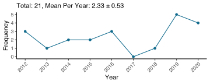

Curriculum Vitae
Updated on January 4, 2019
Education

Ph.D. Student, Cognition and Neuroscience (2017 - Present)
The University of Texas at Dallas
Advisors: Drs. Karen M. Rodrigue & Kristen M. Kennedy

M.A., Psychology (2016)
San Diego State University
Advisor: Dr. Claire Murphy
Thesis: Altered Functional Connectivity and Eating Disinhibition in Individuals with Metabolic Syndrome

B.A., Psychology (2012)
California State University, Northridge
Advisor: Dr. Jose P. Abara
Research Experience

Graduate Research Assistant (2017 - Present)
Cognitive Neuroscience of Aging Laboratory
Center for Vital Longevity
School of Behavioral and Brain Sciences
The University of Texas at Dallas

Graduate Research Assistant (2014 - 2016)
Lifespan Human Senses Laboratory
Department of Psychology
San Diego State University

Undergraduate Research Assistant (2011 - 2013)
Neuroscience Laboratory
Department of Psychology
California State University, Northridge
Teaching Experience

The University of Texas at Dallas
Statistics for Psychology, PSY2317 (Fall 2017, Spring 2018, Fall 2018)

San Diego State University
1. Advanced Statistics in Psychology, PSY670A/B (Fall 2015, Spring 2016)
2. Statistical Methods in Psychology Laboratory, PSY280L (Fall 2014, Spring 2015)
Publications
McIntosh, E. C., Jacobson, A., Kemmotsu, N., Pongpipat, E. E., Green, E., Haase, L., & Murphy, C. (2016). Does medial temporal lobe thickness mediate the association between risk factor burden and memory performance in middle-aged or older adults with metabolic syndrome? Neuroscience Letters, 636, 1-9. http://doi.org/10.1016/j.neulet.2016.10.010
Poster Presentations

Hoagey, D. A., Foster, C. M., Pongpipat, E. E., Rodrigue, K. M., & Kennedy, K. M. (2019, June, to be presented). White matter hyperintensities evidence altered diffusion properties suggestive of poorer white matter health in aging. Poster session presented at the 2019 Organization for Human Brain Mapping Annual Meeting, Rome, Italy
Kmiecik, M. J., Martin, A. D., Kim, L. M., Perez, R., Martinez, D. M., Pongpipat, E. E., & Krawczyk, D. C. (2019, March). Relational Match-to-Sample in Primates: The Interesting Case of the Human. Poster session presented at the 26th Annual Meeting of the Cognitive Neuroscience Society, San Francisco, CA
Pongpipat, E. E., Foster, C. M., Boylan, M. A., Kennedy, K. M. & Rodrigue, K. M. (2019, January). Examination of the relationship among n-back functional connectivity, task performance, and cortical thickness across the adult lifespan. Poster session presented at the 2019 Dallas Aging and Cognition Conference, Dallas, TX
Leverett, S. D., Boylan, M. A., Pongpipat, E. E., Rodrigue, K. M., Kennedy, K. M (2019, January). Personality, Cognition, and Aging: How and when do personality traits affect executive functioning?. Poster session presented at the 2019 Dallas Aging and Cognition Conference, Dallas, TX
Pongpipat, E. E., Boylan, M. A., Foster, C. M., Kennedy, K. K. (2018, November). Functional connectivity of the fronto-parietal and default mode network during n-back across the adult lifespan. Poster session presented at the 48th Annual Meeting of the Society for Neuroscience, San Diego, CA
Pongpipat, E. E., Jacobson, A. & Murphy, C. (2016, November). Metabolic Syndrome is Associated with Altered Functional Connectivity of Primary and Secondary Taste Cortices and Eating Disinhibition. Poster session presented at the 46th Annual Meeting of the Society for Neuroscience, San Diego, CA
Vertrees, R. B., Pongpipat, E. E., McIntosh, E. C., & Murphy, C. (2016, November). Cortical correlates of metabolic syndrome risk factors and hunger in middle aged and older adults. Poster session presented at the 46th Annual Meeting of the Society for Neuroscience, San Diego, CA
Pongpipat, E. E., Jacobson, A. & Murphy, C. (2016, April). Metabolic Syndrome is associated with decreased medial temporal lobe cortical thickness and impaired memory ability. Poster session presented at the 96th Annual Convention of the Western Psychological Association, Long Beach, CA. (Awarded 2016 Western Psychological Association Student Scholarship Award for Outstanding Quality of Research Presented at the Annual Convention).
Pongpipat, E. E., Jacobson, A. & Murphy, C. (2015, November). Functional Connectivity of Taste Sensory and Pleasantness Pathway in Metabolic Syndrome. Poster session presented at the Annual Convention of the Obesity Society and ObesityWeek, Los Angeles, CA
Pongpipat, E. E., & Murphy, C. (2015, April). Effects of Cognitive Decline on Odor Threshold and Identification in Alzheimer’s disease. Poster session presented at the 95th Annual Convention of the Western Psychological Association, Las Vegas, NV. (Awarded 2015 Western Psychological Association Student Scholarship Award for Outstanding Quality of Research Presented at the Annual Convention).
Kelson, C.Y., Pongpipat, E. E., & Abara, J.P. (2014, April). Functional Impact of Neurofeedback on Veterans with PTSD. Poster session presented at the 35th Annual Meeting of the Society of Behavioral Medicine, Philadelphia, PA
Pongpipat, E. E., Magaña, V.M., Sarkissians, S., Camacho, V. & Abara, J.P. (2014, April). An ERP Study of Expectation and Motor Preparation Following Neurofeedback Procedure. Poster session presented at the 94th Annual Convention of the Western Psychological Association, Portland, OR. (Awarded 2014 Western Psychological Association Student Scholarship Award for Outstanding Quality of Research Presented at the Annual Convention).
Neswald, J., Pongpipat, E. E., Magaña, V.M., Sarkissians, S., Lenik, C., Barb, D., & Abara, J.P. (2013, November). The Amplitude of the Contingent Negative Variation Following Neurofeedback Procedure. Poster session presented at the 43rd Annual Meeting of the Society for Neuroscience, San Diego, CA
Pongpipat, E. E., Magaña, V.M., Camacho, V., Neswald, J., Barb, D., Lenik, C., Castillo, G., Arab, A., & Abara, J.P. (2012, April). Cell Phone Use Delays Inhibitory Response. Poster session presented at the 93rd Annual Convention of the Western Psychological Association, Reno, NV
Magaña, V.M., Pongpipat, E. E., Rodriguez, T., Camacho, V., Valadez, E.A., & Abara, J.P. (2012, October). The Effects of Cell Phone Use on the P3 of the Event-Related Potential and on Response Time. Poster session presented at the 42nd Annual Meeting of the Society for Neuroscience, New Orleans, LA
Scott, N.A., Magaña, V.M., Pongpipat, E. E., Salehi, N.L., Barb, D., & Abara, J.P. (2012, October). An ERP Study of Inhibitory Response During Cell Phone Use. Poster session presented at the 42nd Annual Meeting of the Society for Neuroscience, New Orleans, LA
Honors and Awards
| Year | Institution | Award |
|---|---|---|
| 2016 | San Diego State University | Honorable Mention for Outstanding Service as a Teaching Assistant |
| 2016 | Western Psychological Association | Robert L. Solso Award |
| 2015 | San Diego State University | Dr. Edward Geldreich Scholarship |
| 2015 | Western Psychological Association | Robert L. Solso Award |
| 2014 (June) | Huntington Learning Center | Teacher of the Month |
| 2014 | Western Psychological Association | Student Scholarship Award |
| 2014 (January) | Huntington Learning Center | Teacher of the Month |
| 2012 (Fall) | CSU Northridge | Dean’s List |
| 2011 (Spring) | CSU Northridge | Dean’s List |
| 2011 (Fall) | CSU Northridge | Dean’s List |
| 2010 (Spring) | CSU Northridge | Dean’s List |
| 2010 (September) | Cope Health Solutions | Clinical Care Extender Intern of the Rotation Award |
| 2017 (Fall) | CSU Northridge | Dean’s List |
Professional Society Membership
| Year | Institution |
|---|---|
| 2016 - Present | Phi Kappa Phi Honor Society |
| 2012 - Present | Society for Neuroscience |
| 2015 - 2016 | The Obesity Society |
| 2012 - 2016 | Western Psychological Association |